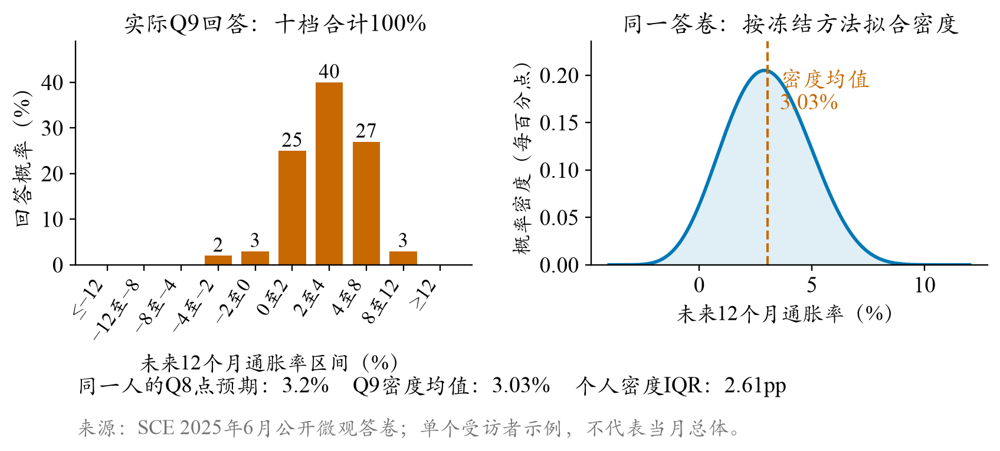
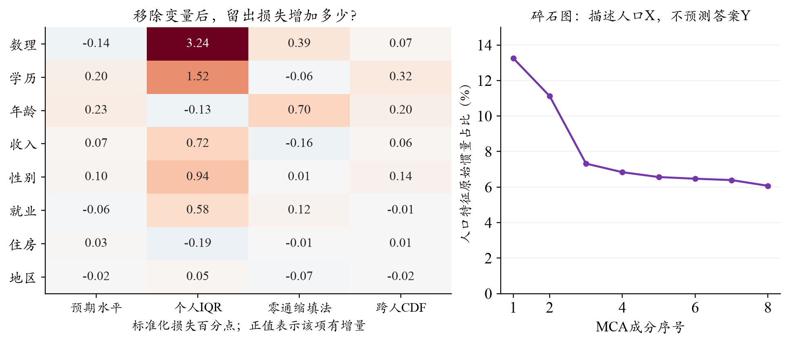
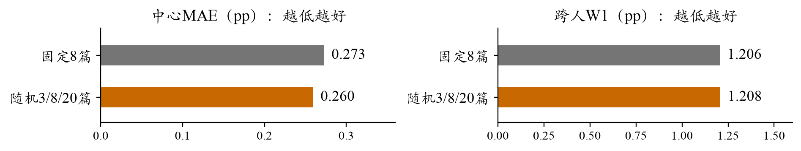
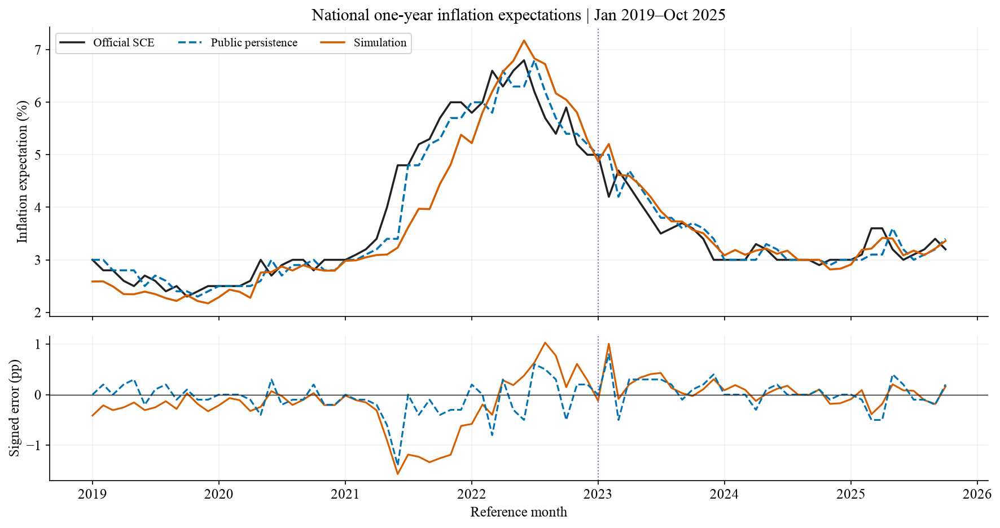
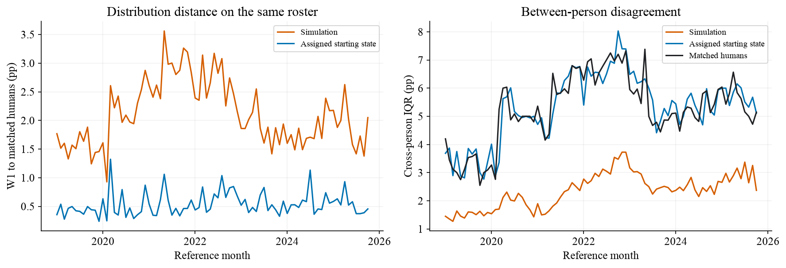
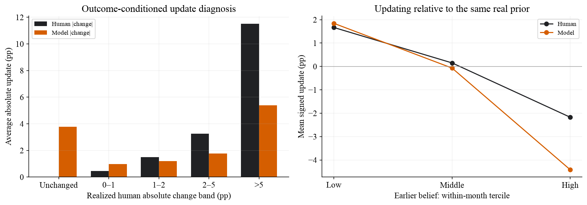
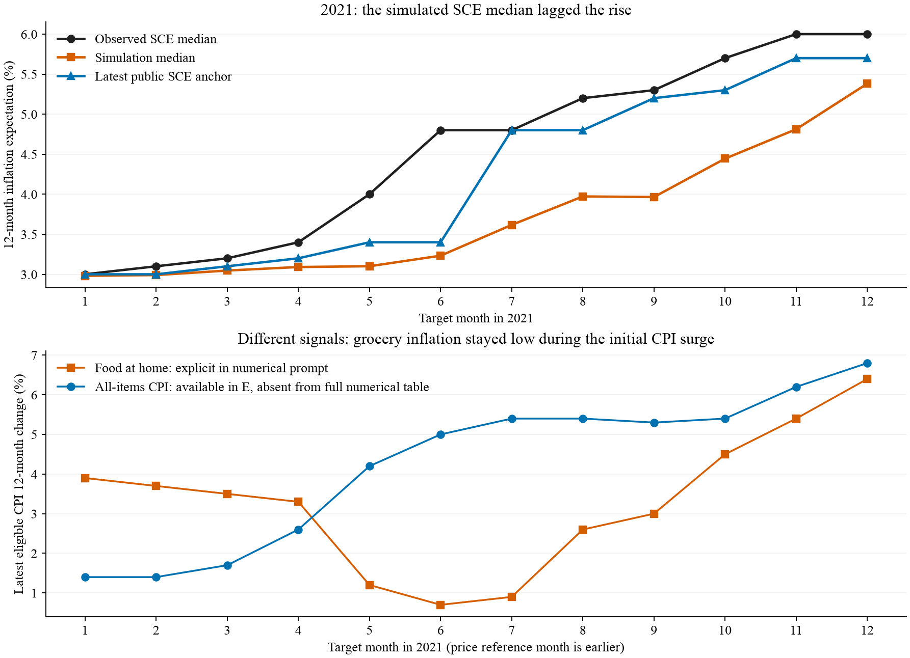

第1页 · 从研究问题到机制假设
居民通胀预期的智能体重建 机制依据、设计选择与跨时期评估
水上挽月 · SocioVerse Challenge 2026 · 赛道A：历史重建与未来预测
居民通胀预期既有持续性，也随生活价格和公共信息而变。我们在SocioVerse2的P/E/B框架下，以纽约联储消费者预期调查（SCE）为对象，将人口构成、信息接触和既有信念转化为可检验的模拟设计。通过人口维度筛选与一系列受控比较，形成含新人和回访者的54格分层样本，每月由512名LLM智能体回答点预期与概率问卷。2019年1月至2025年10月，全国中心MAE为0.317个百分点，未优于持续性基线的0.223；后期出现局部收益，但人际分歧和个体更新仍明显失真。本文着重说明设计依据、实验取舍与失败边界，以检验生成式社会模拟在调查重建中的经验有效性。
关键词：通胀预期；生成式社会模拟；异质家庭；信息接触；概率问卷
1 研究问题与理论框架 家庭怎样看待未来物价，会影响消费、储蓄和工资判断，也是政策沟通的重要问题。只拟合一条全国曲线，却可能掩盖微观机制的错误：高预期与低预期家庭的偏差可以互相抵消，缺乏个人差异的模型也可能碰巧得到正确中位数。我们把人群P（家庭背景与既有状态）、环境E（可见信息）和行为B（问卷回答）分开，因此同时研究总体中心、家庭之间的分歧，以及同一家庭如何修订判断。
1.1 SCE调查的研究价值 SCE由纽约联储开展，自2013年起按月调查美国户主。官网FAQ目前表述约1,200人，采用全国代表性的线上轮换面板；受访者最多连续参与12个月，答卷分布在当月各周。全国摘要按月发布，核心微观资料约滞后9个月公开。[1,2] 它既能追踪个人更新，又同时询问点判断和概率分布，适合检验“平均看起来合理，个人行为却不相似”的问题。本文预测的是居民对未来12个月通胀的看法，并非把实际CPI当成调查答案。
1.2 从理论依据到机制假设 理论线索 对预期形成的启发 本项目可检验的设计 信息更新有成本[4] 公开信息不等于人人接触、理解和吸收；旧信念可能持续。 保留真实历史，允许保持或更新；分别检验新闻数量与主题。 生活价格具有显著性[5] 购买中反复接触的涨价可能比支出占比更能影响判断。 从家庭结构匹配采购角色，再改变可见价格，设置打乱对照。 经历与认知存在差异[9] 经历的时间长度、数理理解和资源约束可能塑造不同响应。 先用真人数据筛选人口维度，再检验认知/财务信息能否改变模型。
这些文献提供的是传导方向，而不是可直接套用的个人更新系数。我们的研究策略是先把每条理论路径变成明确的输入差异，再用对照实验判断模型是否真的使用了这些信息。ConsumerSim提供了人口、环境、回答和惯性校准分层比较的参照；本项目进一步利用SCE微观答卷，检查聚合拟合之外的行为结构。[3]
第2页 · SCE问卷与指标构建
2 SCE问卷与指标构建 两道题都面向未来12个月，却记录不同层面的判断。Q8询问预计通胀或通缩的幅度，是一个点预期；Q9要求为十个可能区间分配概率，表达未来涨幅的不确定性。图1展示2025年6月一位实际受访者的答卷：Q8为3.2%，Q9则把40%的概率分配给2—4%，27%给4—8%，25%给0—2%，其余概率落在其他区间。两题来自同一人，点判断和密度均值不必完全一致。

图1 真实SCE答卷及其密度转换。来源为2025年6月公开微观资料，左侧为原始十档概率，右侧按本项目冻结算法拟合，密度均值3.03%、个人密度IQR为2.61pp。仅展示一位受访者，不代表当月总体；未展示身份或人口特征。 2.1 从十档概率到个人密度，再到人群中位数 每档概率须在0—100%之间，合计100%；负的通胀预期合法，负的概率不合法。按照SCE方法的研究复现，单个闭区间用均匀分布，两个相邻正概率区间用三角分布，至少三个正概率档拟合广义Beta密度。Beta参数通过带约束最小二乘，使有效档界的累计概率尽量贴近回答。随后取每人密度的均值μ，而不是先把所有人的十档概率平均。最后将这些个人均值按人口权重排序，累计权重首次达到50%的位置，就是本项目的群体中位数。
这样就区分了两种“宽度”：一位受访者的密度IQR反映他对未来有多不确定；不同受访者的密度均值IQR反映人群有多大分歧。两者可以朝不同方向变化。官方概念同样先取个人密度均值，但本项目冻结的近似拟合和经验CDF左逆分位数并不等于官方全部优化及插值细节，因此另列官方全国值与同支持微观比较。[1,2]
评测问题 采用指标 怎样理解 总体中心准不准 MAE、RMSE、bias，单位为百分点（pp）。 MAE看平均绝对偏差；RMSE更重视大偏差；bias区分偏高或偏低。 结构是否相似 跨人W1、跨人IQR、个人密度IQR。 W1是两条分位数曲线距离的面积；IQR=P75−P25，应与真人对照，不是越大越好。 是否在正确的人身上更新 相对本人真实上期的变化W1、保持率、大变化率及分组误差。 让模型产生更多变化，并不保证它能识别谁会改变、谁会保持。
第3页 · 人口网格的统计依据与代表性
3 人口分层的统计依据 若只按少数粗特征抽样，可能遗漏重要群体；若把所有人口字段交叉，小格又会缺乏支持。我们因此把“对回答有多少独立信息”和“能否获得可靠支持”分开判断。使用98,382个历史人月构成的框架，从学历、数理、收入、年龄、就业、性别、住房和地区八项中比较126套三/四维候选；监督分析在八项已知且答卷有效的95,375人月共同支持上进行。

图2 既有统计证据。左：2019—2022年按受访者四折留出，移除一整项特征并重新拟合后的损失变化（标准化损失百分点，非通胀pp）。右：分类变量MCA碎石图，只描述人口X的共变，不能当作问卷Y的解释率。 左图显示，数理与学历对个人不确定性较有增量，年龄更多关联预期水平和零通缩填法，各变量的用途并不相同。我们同时检查了冗余：学历—数理的加权Cramer V约0.317，整块调整GVIF仅1.007—1.186，没有证据需要因严重共线性机械删除其中一项。MCA帮助描述结构，最终取舍仍以留出表现和抽样支持为依据。
3.1 维度选择与有限样本下的代表性 四领域等权评分涵盖个人均值、密度IQR、零通缩填法和均值CDF；它衡量月内异质性，不是全国MAE。相对无人群差异参照，旧“学历×在职”六格的平均标准化损失改善为2.160%，学历×数理×年龄×收入为4.917%；后两段时间检查为5.413%和5.471%。原较严支持约定偏向更省样本的“学历×数理×性别”12格，但年龄和收入也提供资源与经历维度。允许小格过采样后，我们据此选择四维54格，而不是把12格或碎石图的某个拐点视为唯一答案。
实际分类为学历3档、数理高/低、年龄＜40/40—60/＞60、年家庭收入＜5万/5—10万/＞10万美元；未知另池。每月抽512人，非空格尽量保底8人，小格全取，余额按人口质量分配。固定种子20261023按人无放回排序，不读取本期预期；设计权重w/π再在格内校准，使过采样的小格汇总时回到其真实人口比例。82个月均可分配，格质量误差＜1e-12，但512人方案只有约60%的质量落在格内ESS≥10的格，不能把覆盖当作精度保证。 就业、住房与地区仍进入画像，不因未列为网格坐标而删除；调查权重和原始身份不发给模型。
3.2 分层画像与个人历史的结合 同类家庭内部仍可能有不同习惯与经历。因此，网格只决定抽样和分组，模型仍读取本人更早的Q8/Q9及历史摘要。没有历史者从最近1—3个月同类匿名新/老受访者池取得联合起点，并保留合成标签；本期答案不参与匹配。新人同样由LLM作答，不用Normal复制来填补身份信息。
第4页 · 理论路径如何变成信息与机制对照
4 信息接触机制与实验设计 有限注意力意味着“公开可得”与“本人接触”之间还有选择过程。SCE专项研究发现，学历、收入及年龄与宏观关注有关，但关系依主题而变，通胀关注回归的伪R²仅0.027。[10] 这不能换算成个人阅读篇数，却提醒我们保留大量组内差异：高学历不等于一定看很多新闻，经常采购也不等于经常读财经报道。
图3 理论路径与操作化。新闻与购物价格是两种信息接触；本人旧信念另行保留。箭头表示待检验的机制路径，不是本文已识别的因果系数。 我们把数量、主题、理解分开：用3/8/20篇表示消息广度，分别约占50%、29.17%、20.83%，整月平均8篇；以同月分配打乱区分“异质性本身”与“人口匹配”的增量。另一方面，CE 2020提供合成支出，ATUS 2022按年龄、住所人数和儿童状态提供采购角色概率，再决定食品细项的可见程度。它们是代理匹配，不是本人的阅读记录、购物收据或心理实测。

图4 V3.2八期新闻量对照的直接两组共同支持，1,116人月、两遍生成。随机量中心略改善，W1几乎不变；3/8/20的篇数与比例是可比成本下的实验设定，并非文献估计的真实阅读量。 理论依据 对照设计 证据与取舍 旧信念具有持续性 明确个人起点与时序；另比较固定半程更新指导。 Flash先验表达使W1 2.617→2.329，中心未同步改善；保留状态，不规定固定更新幅度。 认知与财务处境可能改变解释 数理原题/转述、Q1/Q2，以及心理匹配对打乱；跨月检查。 认知和Q1开发中心有收益，结构或另期表现未保持；不把局部信号全部叠进默认。 价格体验应通过接触传导 采购角色匹配与同月打乱；区分频率数据与强调性指令。 Qwen匹配比打乱中心仅低0.003pp，W1略差；当前价格视图沿用，但身份机制未获确认。 更强模型或更高温度是否更像人 Qwen与V3.2同输入；Flash另以0.5/0.8/1.0四遍区分人内噪声与人际差异。 V3.2共同381人月W1 2.534→1.392，支持选型；提高温度主要增加重复噪声，最终保留0.5。
表1 各行来自不同模型/月份，数值只在本行内部可比。新闻随机量按核心收益及有限代价工作采纳；原分布筛选未过的判定保留。当前实际提示为食品视图＋新闻/政策/信心/旧信念，完整CPI等宏观数表不直接投喂。 信心由Gallup资料合成匹配；E通常统一截至目标月CPI首发日纽约当地日终，而非各人的真实答卷时刻。
第5页 · 完整历史跨度的总体结果
5 全国指标的跨时期表现 
图5 全国Q9派生中心（上）与模型/基线相对官方真值的有符号误差（下）。2019-01—2025-10，82个月等权；2023年竖点线区分48月拟权期与后34月评价期。来源：冻结全量汇总。 时期/比较 模型MAE 基线MAE 模型RMSE 基线RMSE 全82月 0.317 0.223 0.470 0.317 2021年（12月） 0.822 0.325 0.977 0.491 后34月（2023起） 0.176 0.194 0.252 0.270 2025年1—10月 0.157 0.230 0.180 0.285
表2 官方全国比较，单位pp。2025仅覆盖1—10月，不是全年；这是纯模型与基线，尚非组合结果。
全期30/82月模型误差较低，MAE差为+0.094pp，6个月区块95%区间[0.004,0.213]。差距并非均匀分布：2021年全年低估，后34月则小幅优于基线，差−0.018pp、区间[−0.064,0.020]。2025年前10月胜8月，但2024年仍不及基线。这说明小试中的改善具有时期条件，不能从较新的有利月份推到全期。
5.1 惯性组合：不能用后期最优权重替代冻结权重 为把模型增量与调查持续性分开，我们采用无截距凸组合c=(1−λ)b＋λm，其中b为截止前最后公开全国SCE，m为本月模拟中心。只在2019—2022年48个月拟权，固定评价2023—2025年10月34个月。拟权期MAE与MSE均选λ=0，因此后34月冻结组合MAE为0.194pp；纯模型的0.176pp并不是组合成绩。
若只在后34月真值上重新拟权，可以得到较高模型权重，但那只是事后描述。本文不据此更换原划分。全期事后最小化MSE也仅给模型2.897%权重，RMSE从0.317190降至0.317022pp。组合能够利用已有增量，却不能创造模型未吸收的信息，更无法纠正2021年两个分量同时偏低的方向。
比较对象也应保持清楚。官方全国值、完整真人波次、同一抽样人群分开报告；固定512人名单相对整波Q9中位数的平均绝对偏移为0.107pp，未因偏移重选种子。Q8同支持中心MAE为0.815pp，保留起点0.356pp，其表现不能由Q9较低的误差代替。
第6页 · 微观结构、条件差异与信息增量
6 分布收缩主要发生在同类家庭内部 
图6 同支持Q9微观结构，40,933人月。左：模型及保留起点相对真人的跨人W1；右：模型/起点/真人的跨人IQR。跨人分布基于个人密度均值，不是先平均十档概率。 总体中心的局部改善并未消除分布收缩。模型跨人W1为2.114pp，保留起点0.537pp；人际IQR为2.349pp，真人5.256pp。把中位数对齐后，W1仍为2.081pp。更重要的是，54格方差分解中约87%的净缺口发生在格内：人口比例虽然恢复了，同类人的不同判断却没有被充分重建。这正是需要把网格代表性与个体响应机制分开验证的原因。
个人密度内部IQR也偏小，模型3.941pp、真人5.651pp；零通缩概率回答占31.8%，真人54.4%。二者反映不同的填答特征，不能互相代替。仅看33,726个真实相邻回访人月，模型W1仍为1.967pp、照抄本人上期0.512pp，因此微观差距不只来自新人合成起点。

图7 真实相邻回访者的更新。左：按真人本期实际变化幅度事后分组的平均绝对更新；右：按本人旧信念月内三分组的平均有符号更新。真人/模型均减本人真实上期，左侧分组不能用于在线更新分配。 模型变化分布W1为1.244pp，小于完全不更新的2.906pp，说明它确实生成了与新环境有关的变化。但模型保持不变者只有7.35%，真人16.66%；真人不变组被平均改动3.781pp，真人变化＞5pp组的11.520pp改动却只被模拟出5.390pp。它会更新，却没有在恰当的人身上更新。
6.1 人群差异与条件信息 满足支持门槛的月份中，新人中心MAE0.816pp、回访者0.311pp；高中及以下0.665pp/大学及以上0.233pp，低数理0.649pp/高数理0.282pp，低收入0.559pp/高收入0.261pp。各组月份支持不同，以上是诊断而非人口特征的因果作用。对33,726人月的描述性加权回归，模拟单独R²为20.42%，上期单独36.55%；控制历史、人口和月份后41.812%，再加模拟41.873%，仅增加0.061个百分点。回归不是时间外预测检验，也不提供独立人月假设下的显著性结论。
第7页 · 2021年偏差：从实际输入追问机制
7 2021年偏差的机制诊断 
图8 2021年模拟中心与实际可见价格信号。上部是未来12个月预期；下部是截止日前公布的历史同比，二者不能混为同一目标。来源：原始请求、食品首发档案及全国评价。 为什么2021年尤其偏低？该年只占全期14.6%的月份，却贡献37.9%的绝对误差。我们先排查实现问题：6,144份实际请求与重新渲染的提示全部一致，食品原始档案、显示数值及登记日期也相符。没有发现错月或运行时丢文件，注意力由此转向“冻结设计让模型看到了什么”。
7.1 食品信号、政策叙事与个人先验可能相互作用 这里存在一个有经济含义的信号分离：5/6/7月提示中的居家食品同比为1.2%/0.7%/0.9%，同一截止日前可得总体CPI为4.2%/5.0%/5.4%，后者没有作为完整统计表直接展示。与此同时，政策摘要保留当时“暂时性”通胀判断。[7,8] 若模型把这些公共信号理解为较强的降温理由，就可能比真人更快下调已有较高预期。
回访者提供了进一步线索。2021年4,934个真实相邻人月的月度中心偏差仍为−0.715pp；6月同一400人，真人上期中位数4.000%、本期4.364%，模型却为3.262%。因此问题不只是未能预见上涨，也包括对较高旧信念的过度修正。误差分解中模型—同支持真人的−0.769pp远大于抽样项−0.064pp，两者相加的是有符号偏差，而非MAE。
7.2 能推出什么，尚不能推出什么 这一观察把后续研究收窄为两条可区分的路径：环境是否过度代表局部食品价格与专业政策叙事；模型是否把家庭原本分散的信念过快汇合到公共判断。它们与显著性、信息更新成本和经验异质性的理论动机一致，却仍需分别控制信息来源和更新方式才能识别。Kimi正在研究媒体来源多样性，当前不能把NYT普遍降温或社交媒体必然抬高预期当作已证实解释。
拟合人类预期与预测CPI是两个任务。补充对齐未来12个月实际CPI时，2021年真人全国预期MAE3.466pp、模型4.288pp，两者均低估；该补充只使用本地CPI版本能覆盖的月份，不替代主研究目标，也不是新的独立机制识别。 第8页 · 研究边界、可复现性与待补部分
8 结论与适用边界 本研究的经验结论是：当前配置能重建部分总体走势，却不足以稳定提供持续性之外的信息，更没有恢复完整的微观差异。人口网格和信息匹配有明确的理论与统计依据，但它们解决的是代表性与可接触信息的问题；LLM如何使用这些信息，必须再由对照和个体结构检验。聚合中心、分布宽度与更新对应应共同构成生成式社会模拟的经验标准，而非只追求单一曲线的接近。[6]
结论限于当前模型与输入设计。A线用历史当期画像及更早回答，每月独立初始化；CE/ATUS固定年资料是回顾性迁移，新闻文本的历史版本和模型参数知识也存在未认证部分。2019—2022/2023—2025的48/34月划分只对组合拟权是时间外评价，一些较晚月份曾用于机制开发，不能称整套机制盲测。上述局限集中披露，不因某些时期成绩较好而弱化。
8.1 执行与复现声明 主批使用OpenRouter固定SiliconFlow FP8的DeepSeek V3.2，温度0.5、关闭思考、JSON、最多1,024输出token，每个人月生成一次；抽样/新闻分配等伪随机规则随协议记录，不把它们称作模型采样种子。41,984逻辑人月，加两轮人工技术补跑共42,351物理尝试，41,982技术完整。API已报$29.134，含未知费用预留$30.359；该数只属于主批，不是全部开发成本。主生成账本累计计时约13,376秒（不含技术补跑及分析）；剩Q8一份/Q9两份停止补跑。63份概率比例归一化与29份密度计分边界按冻结规则披露。
微观于2026-09-28获取、10-21复核，本期真值与输入物理隔离；原始/修复记录、白名单、源码快照、协议哈希与独立评价分别保存。剩Q9极端补值对注册主中心MAE影响上界约0.00104pp，不能解释全期结论。报告使用既有汇总，未新增模型调用或重新拟合Q9。研究包将区分无密钥干跑、缓存重算与真实生成；数据再分发范围、全项目费用总账及独立解压验收尚待完成，不在初稿中提前宣称通过。
待补结果：2025-11—2026-09的B线暂缓，是否采用Kimi新新闻机制尚未决定。后续先冻结旧人口可得性、合成起点和历史版本；仅有全国真值时只评全国，不填造微观W1/IQR。报告主体不等待这部分，新增配置与结果另留版本。 参考文献与资料 [1] Federal Reserve Bank of New York. SCE Frequently Asked Questions；核心问卷与数据，2026-10-24核查。 原文
[2] Armantier O., Topa G., van der Klaauw W., Zafar B. (2017). An Overview of the Survey of Consumer Expectations. Economic Policy Review, 23(2): 51-72. Appendix C. 原文
[3] Huang Y., Yin Y., Lin J., et al. (2026). Uncovering Salience-Driven Dynamics in Consumer Confidence with Generative Social Simulation. arXiv:2606.30395. 同时参照SocioVerse2框架与赛事P/E/B要求。 原文
[4] Mankiw N. G., Reis R. (2002). Sticky Information versus Sticky Prices. Quarterly Journal of Economics, 117(4): 1295-1328. 信息更新成本作为理论动机，未直接校准本文家庭更新率。 原文
[5] D’Acunto F., Malmendier U., Ospina J., Weber M. (2021). Exposure to Grocery Prices and Inflation Expectations. Journal of Political Economy, 129(5): 1615-1639. 原文
[6] Bisbee J., Clinton J. D., Dorff C., Kenkel B., Larson J. M. (2024). Synthetic Replacements for Human Survey Data? The Perils of Large Language Models. Political Analysis, 32(4): 401-416. 原文
[7] U.S. Bureau of Labor Statistics. CPI News Release, 2021-06-10（May 2021参考期）；其余逐月首发稿随研究档案保存。 原文
[8] Federal Reserve. FOMC Statement, 2021-04-28；本项目原始请求及政策摘要保留各月版本。 原文
[9] Malmendier U., Nagel S. (2016). Learning from Inflation Experiences. Quarterly Journal of Economics, 131(1): 53-87. 原文
[10] Pfajfar D., Winkler F. (2024). Households’ Preferences Over Inflation and Monetary Policy Tradeoffs. June working paper, §4.1/Table 1. 原文